2. Onderzoeksstrategie
Voor aanvang van het onderzoek werd door middel van een briefing toegelicht wat de aanleiding van
het onderzoek was en wat voor onderzoek er gedaan moest worden. Hier is een strategie voor de doorzoeking
opgesteld en is tevens de volgende algemene taakverdeling gemaakt (zie Tabel 1):
Het onderzoek op de plaats delict (PD) vond plaats op dinsdag 26 november 2019. Bij
van het onderzoek rond 14:54 werd begonnen met het
maken van overzichtsfoto’s en het tekenen van een plattegrond (bijgevoegd als Bijlage I).
Hierbij werden onder andere de volgende foto’s genomen (zie Figuur 1-8).
Dit overzicht is een samenvatting van al het fotografisch materiaal dat bij het onderzoek
is verzameld, het complete bestand is bijgevoegd als bijlage (zie Bijlage II).
De volgende afbeelding (Figuur 1) toont een overzicht van de voorkant van de doorzochte woning.
Aan het einde van het pad, rechts naast de ingang van de schuur, is een stuk rood
plastic zichtbaar. Hieronder werd een schoenspoor (spoornummer A-1) aangetroffen. Verder werd
op de stoep vóór de hoofdingang een vage afdruk van een schoen gevonden (spoornummer A-2),
en was op het gras voor het raam een indruk van een bandenspoor zichtbaar (spoornummer A-3).
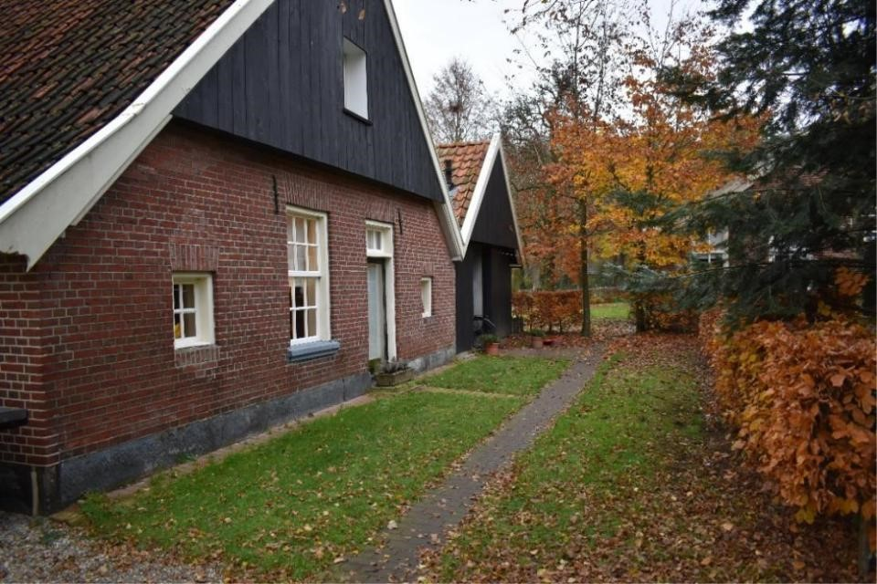
Figuur 1 Vooraanzicht van de doorzochte woning
In Figuur 2 is de voorkant van de woning vanaf de andere kant gefotografeerd, zichtbaar. Op de
voorgrond is opnieuw het rode plastic zichtbaar waaronder schoenspoor (A-1) gevonden werd.
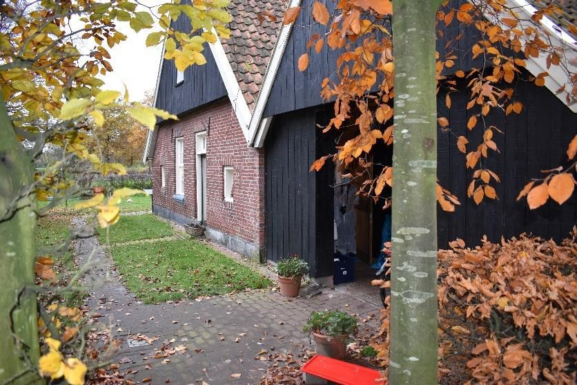
Figuur 2 Vooraanzicht van de doorzochte woning, onder andere hoek
Na het betreden van de woning werd een overzichtsfoto gemaakt van de woonruimte (zie Figuur 3).
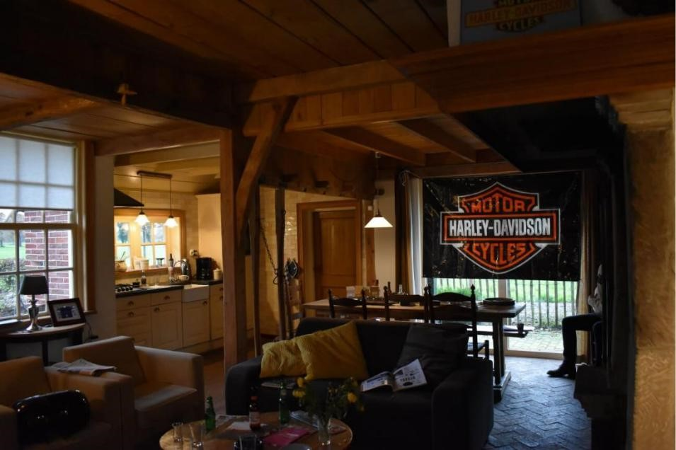
Figuur 3 Overzichtsfoto kamer
Toen de overzichtsfoto’s gemaakt waren, werd overgegaan tot het onderzoeken en veiligstellen van sporen
in de woonkamer. Hierbij werd tegen de klok in gewerkt door te beginnen in de zithoek, daarna door te gaan
naar de eethoek, en vervolgens de keuken te onderzoeken. Op de salontafel stonden verschillende drinkglazen,
drankflesjes en verpakkingsmaterialen van motoronderdelen (spoornummers B-2 tot B-6, B-8, B-9). Van alle
drankflesjes werd door een teamlid een DNA-monster genomen. Ook stond hier een asbak (B-Verspreid over de
bank en stoelen lagen verschillende tijdschriften en kranten (B-11 tot B-16) en lag op de salontafel een
visitekaartje (B-10). Het bankstel vertoonde een beschadiging (B-18), waardoor de witte stof onder de
bekleding zichtbaar was. Toen het onderzoek in het zitgedeelte van de woonruimte afgerond was, werd
het onderzoek voortgezet in de eethoek. Figuur 4 toont een overzichtsfoto van dit deel van de woning.
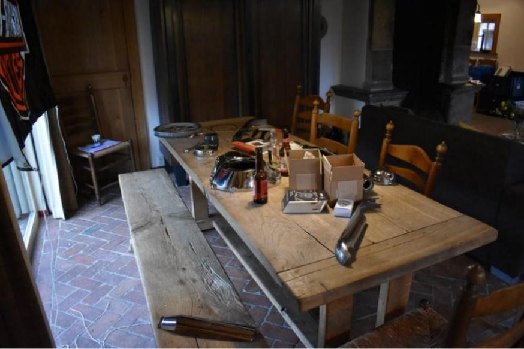
Figuur 4 Overzichtsfoto eetruimte
Op de eettafel en de bijbehorende bank en stoelen werden verschillende motoronderdelen aangetroffen (C-0 tot C-2, C-8). Van enkele onderdelen konden vingersporen worden veiliggesteld. Daarnaast stonden er enkele drankflesjes (C-5 tot C-7), waar opnieuw DNA van is verzameld.
Het onderzoek werd, na het afronden van het onderzoek in de eethoek, voortgezet in de keuken, waar een overzichtsfoto van zichtbaar is in Figuur 5.
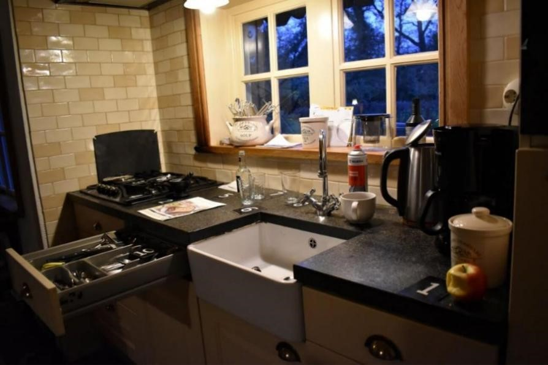
Figuur 5 Overzichtsfoto keuken
De lade is vóór het nemen van deze foto door een teamlid geopend en de appel die op het aanrecht ligt (spoornummer D-1), is uit de koelkast gehaald. Op het aanrecht werden verder drie soorten wit poeder gevonden, waarvan een deel in een vijzel lag (spoornummer D-2), een ander deel op een motorspiegel lag (D-3), en een derde deel los op het fornuis lag (spoornummer D-4). Ook stonden op
het aanrecht een leeg flesje Jack Daniels whisky-cola (D-5) en verschillende lege drinkglazen (D-6 tot D-8).
In de geopende lade werden twee koperkleurige kogelhulzen aangetroffen (D-10.1 en D10.2). Ook werden er verscheidene vingersporen van de deur van de magnetron veiliggesteld (D-11.1 tot D-11.4). Tenslotte werden er op het randje van de vensterbank verscheidene enveloppen met inhoud gevonden (D-20, D-21).
Op een bijzettafeltje naast het keukenblok en achter de zithoek, werden enkele tickets en bonnen gevonden (B-17), evenals een leeg doosje van een USB-stick (D-20), bouwinstructies voor motoronderdelen (D-22) (zie Figuur 6). In de prullenbak werd een foto die uit een blad gescheurd was, aangetroffen (D-24).
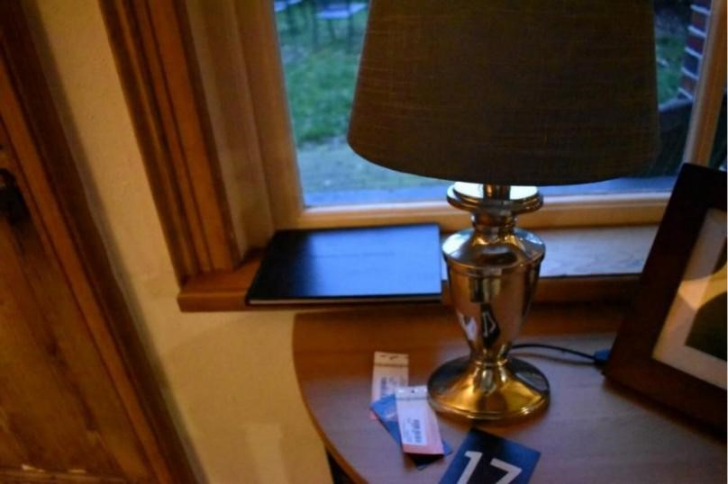
Figuur 6 Detail bijzettafeltje
Ook stond hier een digitale fotolijst waarin een SD-kaartje werd aangetroffen (G-2). Van het kussen van een stoel werden een aantal haren veiliggesteld (E-1), en konden uit een pet van de kapstok ook enkele haren worden verzameld (E-2). In de woonruimte bevond zich tevens een desktopcomputer (zie Figuur 7).
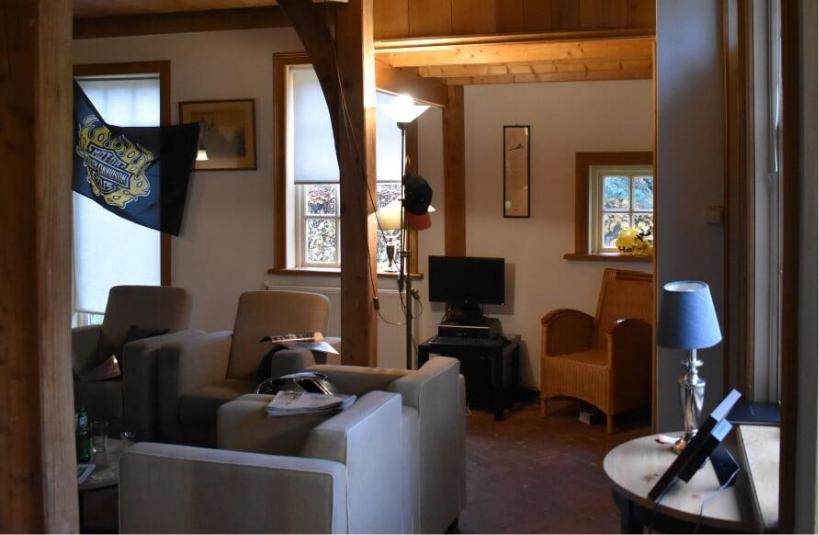
Figuur 7 Kamer met desktop
Deze computer is door een teamlid onderzocht, waarna zowel de kast (spoornummer G-3) als de DVD die zich in de optische drive bevond (G-4), werden veiliggesteld.
Bij een laatste, afrondende zoekslag door de woning, werden op de rand van de schouw verschillende verpakkingsmaterialen aangetroffen. Dit betrof een lege zak waarin aanmaakblokjes gezeten zouden hebben en een lege doos voor motoronderdelen (spoornummer G-19) (zie Figuur 8).
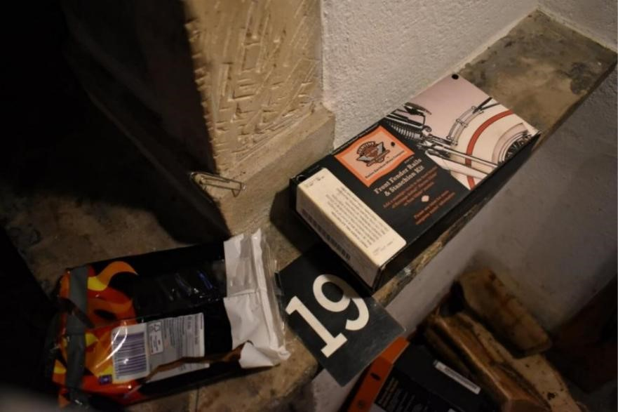
Figuur 8 Verscheidene stukken verpakkingsmateriaal
Ook werd er in een vensterbank een gele Jumbo-tas gevonden (spoornummer B-21) en werd een stuk tape veiliggesteld waarmee een vlag opgehangen was geweest (B-22). In een grote kast werd een doos waarin motoronderdelen gezeten hadden, gevonden, met daarin een aanzienlijke som geld (E-0), en in de bedstee lag een motoronderdeel. In de open haard werd een revolver aangetroffen (F-0). Tenslotte is er in een lade van de keuken een USB gevonden en veiliggesteld (G-5) en werd in de magnetron cash gevonden (D-23).
Het volledige, chronologische logboek is bijgevoegd als bijlage (zie Bijlage III). Ook zijn hier de volledige sporenlijst (Bijlage IV) en de beslaglijst (Bijlage V) te vinden, net als de Chain of Custody (Bijlage VI).
Bij de doorzoeking van de plaats delict, zijn er door teamleden verscheidene vingersporen veiliggesteld (spoornummers C-0.1, C1.1/C-1.4, D-11.1/D-11.4). Verder zijn er bij het onderzoek op het lab nog enkele vingersporen gevonden op in beslag genomen objecten (spoornummers B-6, B-22.1, C-7.1, D-5.1 en E-0). Aangezien de papillairlijnen op de vingers zowel onveranderlijk als uniek zijn voor ieder persoon (Kaushal & Kaushal, 2011), kunnen deze sporen gebruikt worden om de personen die deze geplaatst hebben, op te sporen. Het feit dat de vingersporen van een persoon zijn aangetroffen op een bepaalde plaats, betekent dat deze hier ook aanwezig is geweest. Op deze manier kan vastgesteld worden welke personen het clubhuis van de motorclub hebben bezocht en hier waarschijnlijk lid van zijn.
Er is gekozen eerst DNA af te nemen van de sporen C-7 en B-5, omdat het gebruik van poeders of cyanoacrylaat dit zou kunnen beschadigen. Bij het afnemen van DNA aan de randen van beide flesjes is de kans erg klein dat er bruikbare vingersporen worden beschadigd.
Er zijn verschillende technieken die bij het onderzoeken van vingersporen gebruikt kunnen worden. Bij het onderzoeken van de sporen C-0.1, C-1.1/C-1.4, C-7.1, D-5.1 en D11.1/D11.4 is er gekozen voor het gebruik van speciaal zwart poeder, aangezien dit op veel ondergronden een goed contrast oplevert en goed verkrijgbaar is. Ook is dit poeder minder vet, waardoor de kans dat een spoor wordt dichtgesmeerd, kleiner is. Verder was er bij het doen van onderzoek op het lab niet altijd een cyanokast beschikbaar, waardoor andere technieken gebruikt moesten worden. Bij het onderzoeken van de sporen B-6 en E-0 is de cyanokast wel gebruikt, aangezien dit minder tijdrovend is en in de tussentijd andere sporen onderzocht konden worden.
Voor het spoor dat op tape gezet was, werd wet powder gebruikt. In dit soort gevallen kan er geen normaal poeder gebruikt worden, omdat dit dan over de hele plakzijde van de tape blijft zitten, en het spoor onbruikbaar wordt. Wet powder is wel geschikt, aangezien het exces aan poeder eenvoudig met een beetje water kan worden weggespoeld, terwijl het vingerspoor zichtbaar blijft.
De resultaten van dactyloscopisch onderzoek worden weergegeven aan de hand van zeven mogelijke conclusies: (1) het onderzochte spoor is niet geschikt. Er konden geen twaalf minutiae worden gevonden of het spoor was onduidelijk of incompleet. (2) het onderzochte spoor komt niet overeen met een referentie. De persoon die het spoor geplaatst heeft is geen bekende van de politie en zijn vingerafdrukken staan niet geregistreerd. (3) het gevonden spoor komt niet overeen met de referenties die zijn afgenomen bij de verdachte; het spoor is niet afkomstig van de verdace. (4) er wordt overgegaan tot individualisatie. Er zijn genoeg overeenkomsten tussen spoor en referentie en er kan gezegd worden dat het gevonden spoor afkomstig
is van een bepaald persoon. (5) er is een mogelijkheid dat het gevonden spoor afkomstig is van de verdachte, maar er zijn zowel overeenkomsten als verschillen. (6) het is niet mogelijk om een conclusie te trekken uit de resultaten. Er is een groot verschil tussen de referentie en de gevonden sporen, maar het is niet duidelijk wat dit heeft veroorzaakt. Er kan niet gezegd worden of de sporen afkomstig zijn van de verdachte. De laatste mogelijke conclusie bij dactylosopisch onderzoek is dat (7) de referentieafdrukken niet duidelijk genoeg zijn om te gebruiken voor onderzoek (Riemen & Voorhoeve, 2015).
Bij het onderzoeken van de vingersporen van de plaats delict, zullen de resultaten eveneens op deze manier worden weergegeven.
Tijdens de huisdoorzoeking zijn er enkele bier- en whiskyflessen gevonden. Uit het feit dat er niet hetzelfde aantal drinkglazen aanwezig waren, kon gededuceerd worden dat er rechtstreeks uit de flessen is gedronken. Door het directe contact van de mond met de fles blijft er vaak speeksel achter op het glas. Speeksel bevat onder andere buccale cellen waar DNA in te vinden is. Dit DNA kan onderzocht worden om een profiel op te stellen van de persoon die uit de fles gedronken heeft, wat vergeleken kan worden met die van verdachten. Zo kan er vastgesteld worden wie er aanwezig geweest is op de locatie om zo te bepalen wie prominente leden van de motorclub zijn.
DNA bevat veel niet-coderend DNA, code die geen invloed heeft op de productie van eiwitten. Delen van dit niet-coderend DNA bevatten herhalende DNA-sequenties. Deze stukken, ook wel STR’s genoemd, zijn uniek per individu, net als bijvoorbeeld papilleerlijnen op de vingertoppen. (Carroll et al., 2015).
Voor het onderzoeken van deze STR’s wordt er gebruik gemaakt van verschillende opeenvolgende technieken. De eerste stap is het isoleren van het DNA. Om ervoor te zorgen dat er genoeg DNA is om mee te werken wordt er vervolgens een polymerasekettingreactie (PCR) veroorzaakt. Hierdoor wordt het DNA gemultipliceerd, waarna er gebruik gemaakt wordt van sequencing, waarmee een beeld geschetst kan worden van het DNA-profiel. (Carroll et al., 2015).
Het isoleren van DNA wordt gedaan door de cellen eerst open te breken (lysis). Dit kan door zeep toe te voegen in een reageerbuis waar de cellen in zitten, waardoor het celmembraan afbreekt. Hierna worden de eiwitten uit de cellen gehaald (Carrol et al., 2015).
In het menselijk lichaam worden eiwitten afgebroken door enzymen. Door enzymen toe te voegen bij de afgebroken cellen is het dus mogelijk om de eiwitten uit de oplossing te verwijderen. Nadat dit is gebeurd, wordt het DNA uit de oplossing gehaald. Dit wordt gedaan door ijskoude alcohol toe te voegen. Doordat DNA minder goed oplosbaar is in alcohol zal het DNA neerslaan. Dit neergeslagen DNA is vervolgens uit de oplossing te halen door de oplossing te centrifugeren of door het op te zuigen met een pipet. (Carrol et al., 2015).
Vervolgens wordt het DNA gemultipliceerd middels een PCR-techniek. Voor een succesvolle PCR-reactie is het volgende nodig: een DNA-sample, DNA-primers, nucleotiden en DNA-polymerase. Een DNA-primer is een klein stukje DNA dat als startpunt gebruikt wordt voor een PCR-reactie. Nucleotiden zijn de bouwstenen voor DNA, die nodig zijn om DNA op te bouwen en DNA-polymerase is een enzym wat voor de PCR-reactie zorgt en deze leidt. De vier elementen worden samengevoegd in een stabiele oplossing in een reageerbuisje.
PCR vindt plaats in drie stappen. Eerst wordt de oplossing verwarmd, waardoor de dubbele helix van het DNA loslaat en er twee losse DNA-strengen ontstaan. Vervolgens wordt de oplossing afgekoeld, waardoor de DNA-primers zich kunnen binden aan deze nu losliggende strengen. Het DNA-polymerase bindt zich vervolgens aan deze primers wanneer de oplossing weer wordt verwarmd. Nucleotiden gaan dan op hun beurt binden aan de keten, waardoor er meer DNA ontstaat. (Carrol et al., 2015).
Sequencing is het bepalen van de nucleïnezuur-volgorde van het DNA, wat uiteindelijk resulteert in een DNA-profiel. De sequencing-techniek die hier besproken wordt, heet dideoxy-sequencing, ofwel Sanger-sequencing. De oplossing met DNA wordt opnieuw opgewarmd, waardoor het DNA weer gesplitst wordt in twee strengen: een template streng en een complementaire streng. De template streng krijgt vervolgens een DNA-primer aan het 5’-uiteinde. Het DNA met de primer wordt daarna verdeeld over vier reageerbuisjes. Figuur 9 Voorbeeld van een DNA-profiel
In ieder reageerbuisje wordt vervolgens nog DNA-polymerase en dNTP’s toegevoegd, net als in ieder reageerbuisje een andere ddNTP. Een dNTP is een nucleotide met een OH-groep, terwijl een ddNTP geen –O– meer bevat bij de 3’-koolstofgroep. Hierdoor stopt de polymerase met het koppelen van nucleotiden zodra het op een ddNTP stuit. Zo ontstaan er DNA-strengen van verschillende lengtes. (Carrol et al., 2015; Pyrak et al., 2019).
Aan de hand van polyacrylamide gelelektroforese wordt de volgorde van het DNA bepaald. Hiertoe wordt de inhoud van de vier reageerbuisjes naast elkaar op een plaat gelegd; in een gel dat onder stroom komt te staan.
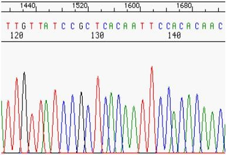
Figuur 9 Voorbeeld van een DNA-profiel
DNA migreert in de gel van de negatieve pool naar de positieve pool, waarbij korte strengen verder migreren verder dan langere strengen. Hierdoor ontstaat een ‘banded’ patroon in elke reageerbuis. Aan de hand van dit patroon is het vervolgens mogelijk een DNA-profiel op te stellen. Zo een profiel leest van de positieve pool naar de negatieve pool. Hieruit komt een elektroferogram.
Het is ook mogelijk een DNA-profiel op te stellen aan de hand van een chromatograaf. Hierbij representeert iedere kleur een andere base en de volgorde van gekleurde pieken
geeft het DNA-profiel (zie Figuur 9). (Carrol et al., 2015). Het is vaak zo dat deze kleuren standaardkleuren zijn voor de verschillende basen (zie Tabel 2) (Al-Hosary, 2017):
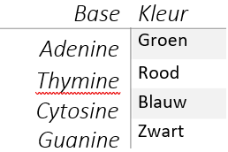
Tabel 2: De kleuren van de pieken in het chromatogram duiden verschilende basen aan. Hiermee kan een DNA-profiel worden opgesteld (Al-Hosary, 2017).
Het vergelijken van DNA-profielen wordt gedaan door te kijken naar de elektroferogrammen hiervan. Een elektroferogram geeft genetisch materiaal weer per locus. In een elektroferogram representeert het balkje een locus en de pieken de allel. In een compleet profiel zal iedere locus één of twee pieken tonen. Theoretisch gezien zou het DNA-profiel van de sample overeen moeten komen met het profiel van de verdachte. Het kan echter voorkomen dat een DNA-profiel niet compleet is of dat er een DNA-profiel ontstaat van een mengsel van DNA van verschillende individuen. Om een match te krijgen is het dan de bedoeling dat er wordt gekeken of allelen van de verdachte overeenkomen met die op de sample. Bij een mengsel van DNA zijn er dan meer dan twee pieken te zien per locus.
Op de plaats delict is DNA veiliggesteld van de drankflessen en de appel (spoornummers B-5, B-6, B-9, C-5/C-7, D-1 en D-5). Dit is gedaan vóór het dactyloscopisch onderzoek op de flessen, om ervoor te zorgen dat het DNA niet zou beschadigen. Ook was de kans erg klein dat er bruikbare vingersporen rond de rand van de flesjes zaten.
Het is daarnaast niet per se van belang om het volledig profiel te hebben. Het is namelijk mogelijk alleen middels Y-chromosomen onderzoek te doen naar het DNA voor forensische doelen. Op Y-chromosomen zitten namelijk genetische markers die van pas komen wanneer men te maken heeft met mengsels van mannelijk DNA. Y-chromosomen komen namelijk alleen voor bij mannen. Verder
worden Y-chromosomen van vader op zoon overgedragen, waardoor er een mannelijke familiebanden gelegd kan worden. (National Institute of Justice, 2012).
Verder is het ook mogelijk om met mitochondriaal DNA, mtDNA, aan de slag te gaan. mtDNA geeft mogelijkheden om onderzoeken te verrichten wanneer dit niet kan met STR’s. Uit oude overblijfselen waar geen cellen met kernen in zitten, zoals botten, haar en tanden, kan mtDNA gehaald worden. Dit helpt vaak bij cold cases. mtDNA wordt overgedragen van de moeder, waardoor een maternaal familieverband kan worden samengesteld. (National Institute of Justice, 2012).
Bij het onderzoeken van de haren (spoornummer E-1 en E-2) zijn verschillende technieken gebruikt om te onderzoeken wat de morfologische kenmerken hiervan zijn. Aan de hand van deze vastgelegde kenmerken, kan vergelijkend onderzoek gedaan worden met haren van verdachten, om vast te stellen of de gevonden haren van deze personen afkomstig zouden kunnen zijn. Indien dit het geval is, is het waarschijnlijk dat de verdachten op de locatie waar de haren gevonden zijn, aanwezig zijn geweest en mogelijk lid zijn van El-Doppo. Verder zal onderzocht worden of de sporen E-1 en E-2 afkomstig zouden kunnen zijn van een huisdier van één van de verdachten, wat zou kunnen betekenen dat een persoon die in contact geweest is met het huisdier aanwezig geweest is op de locatie, of dat het huisdier zelf aanwezig geweest is op de locatie.
Er is gekozen om enkel morfologisch onderzoek uit te voeren aan de gevonden haren, aangezien er geen huidweefsel aangetroffen werd bij de wortel van de haar. De kans dat er DNA uit het haarzakje zou kunnen worden geïsoleerd, was beperkt. Ook was het niet realistisch dat er in de korte tijd die restte voor het onderzoek nog een analyse kon worden uitgevoerd.
Van spoor E-1 werd vermoed dat het een menselijke haar was, aangezien deze aangetroffen werd in een pet. Spoor E-2 leek een dierlijke haar te zijn, omdat deze een textuur had die afweek van een menselijke haar. Om deze vermoedens te bevestigen werd microscopisch onderzoek uitgevoerd.
Het forensisch onderzoeken van haren bestaat uit twee fasen: het identificeren van het spoor en het vergelijken met referentieharen van een bekende bron (Deedrick, 2000).
De eigenschappen van een haar worden bij het doen van onderzoek weergegeven aan de hand van de namen van de verschillende structuren binnen de haar. De drie meest belangrijke onderdelen zijn de cuticle, de medulla en de cortex. Dit zijn de buitenste laag van een haar, de kern en het hoofdbestanddeel respectievelijk (Deedrick, 2004). Een overzicht van de opbouw van een haar wordt weergegeven in figuur 10 (Deedrick, 2004).
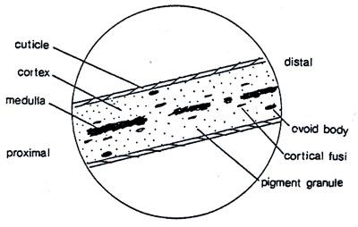
Figuur 10 Schematische weergave van een haar
Mensen- en dierenharen zijn van elkaar te onderscheiden op basis van verschillende eigenschappen. Waar mensenharen meestal even in kleur zijn over de hele lengte van de haar, kunnen dierenharen sterk in kleur variëren op verschillende plaatsen van één haar. Dit fenomeen wordt ‘banding’ genoemd. Ook is het pigment in mensenharen meer gelijkmatig verdeeld over de cortex, soms iets meer geconcentreerd richting de cuticle, waar het pigment bij dieren meer geconcentreerd is rond de medulla. Verder verschilt de vorm van de haarwortel, de structuur van de medulla en het schubbenpatroon van de cuticle tussen mensen en dieren sterk (Deedrick, 2004).
Voor het microscopisch onderzoeken van de haren is een wetmount in Permount-techniek gebruikt om de cortex en de medulla van de haren goed te kunnen bekijken. Er is gebruik gemaakt van een scale cast in nagellak om het schubbenpatroon van de cuticle te onderzoeken. Deze twee technieken zijn gekozen omdat deze niet-destructief zijn, wat inhoudt dat de sporen hierna gebruikt kunnen worden voor verschillende andere onderzoeken, omdat ze niet beschadigd zijn.
Er zijn verschillende conclusies die naar aanleiding van morfologisch onderzoek aan haar getrokken kunnen worden. Ten eerste kan geconcludeerd worden dat de gevonden haar dezelfde eigenschappen vertoond als de referentie en dat beide haren van dezelfde bron afkomstig kunnen zijn. Ten tweede kan geconcludeerd worden dat de onderzochte haar en de referentie afwijkende eigenschappen vertonen en dat ze niet met dezelfde bron geassocieerd kunnen worden. Ook is het mogelijk dat er geconcludeerd wordt dat het niet duidelijk is of beide haren van dezelfde bron afkomstig zijn, aangezien de haren zowel overeenkomsten als verschillen vertonen (Deedrick, 2000).
Tijdens de huisdoorzoeking zijn er drie verschillende witte poeders gevonden (spoornummers D-2, D-3 en D-4), waarvan het vermoeden was dat deze verdovende middelen betroffen. Er zijn monsters genomen en veiliggesteld voor verder onderzoek.
Het in bezit hebben en verkopen van drugs is in Nederland illegaal (Politie, z.d.). Voor veel drugs zijn er tests om na te gaan of het ook echt om een drug gaat. Als dit het geval is, is het feit dat deze stoffen zijn aangetroffen in het clubhuis van de motorclub een belastende factor voor de individuen die hier aanwezig geweest zijn.
De tests werken allemaal op een vergelijkbare manier; een ampul is gevuld met een vloeistof, een indicator, die reageert met de drug waar de test voor is gemaakt. De kleur die de vloeistof wordt
zodra het in aanraking komt met drugs, staat aangegeven op de verpakking. Bij een hele lichte kleurverandering zitten er sporen van de drugs in de stof, maar is de stof zelf niet de drug.
De volgorde van het testen is niet erg belangrijk; de genomen monsters zijn groot genoeg om meerdere tests uit te voeren. Als er een sterk vermoeden is dat het om een specifieke drug gaat, kan deze test wel het beste eerst gedaan worden, zodat er minder kans is dat er meerdere tests moeten worden uitgevoerd.
Bij het onderzoeken van het vuurwapen (spoornummer F-0) en de hulzen (spoornummer D-10) is het doel om (1) te controleren of de hulzen die gevonden zijn bij de doorzoeking afkomstig zijn van het gevonden wapen, (2) te onderzoeken of het gevonden wapen gebruikt is bij een eerder misdrijf en (3) te onderzoeken of de gevonden hulzen afkomstig zijn van een vuurwapen dat eerder gevonden en geregistreerd is.
Volgens Somhorst Wapenmakers (persoonlijke communicatie, 23 januari 2020) maken verschillende vuurwapens gebruik van verschillende soorten munitie. De bodem van een patroon die gebruikt wordt bij een revolver steekt namelijk iets meer uit om vastgehouden te worden in de trommel van een revolver, terwijl het patroon van een pistool een inkeping heeft vlak voor de bodem, waarbij de bodem éénzelfde diameter heeft als vlak voor de inkeping.
Om te kunnen herleiden van welk vuurwapen een huls afkomstig is, is het gebruikelijk de eigenschappen van de uitgeworpen huls te vergelijken met de vorm van de slagpin van betreffend wapen. Hiertoe wordt een proefschot afgevuurd, waarna de indrukken van de slagpin op de huls vergeleken worden met die op het te onderzoeken monster, om zo te bepalen of deze afgevuurd is door hetzelfde vuurwapen. Soms, vooral in het geval van vuurwapens met een erg lange slagpin, wordt de kop van de huls, waar deze indrukken in achter zouden moeten blijven, echter compleet vernietigd, waardoor er geen indrukken van de pin in achterblijven. In dit soort gevallen kunnen de markeringen van de kamer op de hulzen gebruikt worden voor identificatie, evenals indrukken in de vorm van een driehoek of halve cirkel op de huls die gemaakt worden door het uitwerpmechanisme. (Rastogi, 1964). In het geval van dit vuurwapen is dit echter niet bruikbaar, aangezien een revolver geen uitwerpmechanisme bevat.
Gezien het feit dat de aangetroffen revolver zes kamers heeft, zullen er een groot aantal proefschoten uitgevoerd moeten worden, om er zeker van te zijn dat er voldoende monsters zijn van alle kamers. Na het verzamelen van dit referentiemateriaal, kan dit vergeleken worden met zowel de gevonden hulzen als referentiehulzen van andere vuurwapens in het systeem, als hulzen die gevonden zijn bij andere geregistreerde misdrijven.
Dit vergelijkend onderzoek wordt gedaan met een vergelijkingsmicroscoop en berust op de unieke kenmerken van vuurwapens, zoals de vorm van de slagpin en de kamer. Hierbij wordt onderscheid gemaakt tussen klassenkenmerken en individuele kenmerken. Waar klassenkenmerken ontstaan bij het productieproces van het wapen en dus bij veel verschillende vuurwapens van dezelfde producent kunnen voorkomen, zijn individuele kenmerken uniek voor één specifiek wapen. Deze zijn dus uitermate geschikt om te gebruiken bij vergelijkend onderzoek. (Dack, 2014).
Klassenkenmerken zijn deel van het ontwerp van een wapen en kunnen nuttig zijn bij het terugleiden van een vuurwapen naar een producent, maar zijn niet bruikbaar voor de identificatie van een vuurwapen. Sub-klassenkenmerken ontstaan eveneens tijdens het productieproces, maar ontstaan bij toeval en zijn in essentie een imperfectie. Ook dit soort kenmerken kan bij meerdere vuurwapens voorkomen, maar zijn specifieker dan klassenkenmerken. Tenslotte komen er toevallige
kenmerken voor die alleen ontstaan bij het afvuren van een beperkt aantal patronen, aangezien een vuurwapen door slijtage en beschadigingen constant aan verandering onderhevig is. Dit soort kenmerken komen slechts beperkt voor een bemoeilijken vergelijkend onderzoek aanzienlijk. Het is namelijk van belang de individuele kenmerken te onderscheiden van de toevallige en de klassenkenmerken. (Dack, 2014).
Bij het vergelijken van de referentiehuls met de huls die onderzocht wordt, wordt een vergelijkbaar proces aangehouden als bij het vergelijken van een vingerspoor met een referentie. Waar dit bij dactyloscopie ACE-V genoemd wordt, gebruiken onderzoekers bij het identificeren van vuurwapens een andere terminologie: evalueren, vergelijken, concluderen en verifiëren, wat in essentie hetzelfde inhoudt als ACE-V. (Houck, 2016).
Na het doen van onderzoek kan één van drie conclusies worden bereikt. Ofwel er is sprake van een ‘identificatie’, waarbij vastgesteld wordt dat een onderdeel, in dit geval een huls, waarschijnlijk afkomstig is van een bepaald vuurwapen, ofwel er is sprake van ‘eliminatie’, waarbij wordt vastgesteld dat betreffende huls niet afkomstig is van het onderzochte vuurwapen, ofwel de resultaten zijn ‘niet bruikbaar’ omdat er niet genoeg bewijs is om tot een eenduidige conclusie te komen. (Dack, 2014).
Bij het onderzoeken van de hulzen is ervoor gekozen alleen vergelijkend onderzoek te doen, aangezien de hulzen al enige tijd in een plastic zakje gezeten hadden, en het waarschijnlijk was dat mogelijke vingersporen ernstig beschadigd waren. Vergelijkend onderzoek naar de indruk van de slagpin op de huls was nog wel mogelijk, aangezien dit tijdens het bewaren niet veranderd was. Er kon geen dactyloscopisch onderzoek worden uitgevoerd op de revolver, aangezien deze niet beschikbaar was op het lab.
Volgens W. Schulte (persoonlijke communicatie, 11 oktober 2019) heeft een spoor altijd een criminalistische waarde (W. Schulte, 2019). Zo kan uit schoensporen de looprichting van een persoon, de volgorde van ontstaan en de snelheid en afwijkingen in het lopen worden afgeleid. Dit soort sporen is dus niet alleen nuttig bij de identificatie van personen, maar ook bij het reconstrueren van gebeurtenissen die op een plaats hebben plaatsgevonden.
Sporen hebben daarnaast verschillende verschijningsvormen en komen voor als indruk, afdruk en als latent spoor. Wanneer een hard voorwerp in een zachte ondergrond komt, wordt de impressie die dit achterlaat, een indruk genoemd. Dit is dan ook vaak een driedimensionaal spoor. Dit soort spoor kan bijvoorbeeld gemaakt worden door een schoen in zand of zacht aarde. Een afdruk wordt gemaakt door de overdracht van een stof zoals verf of bloed op een harde achtergrond die niet kan vervormen, waar als het ware een stempel gezet wordt (Politieacademie, 2007).
Schoensporen kunnen gebruikt worden bij de identificatie van een verdachte. Schoenzolen hebben namelijk per merk en type een andere vorm en een ander patroon in het profiel. Bij het onderzoek wordt er gekeken naar afmeting, profilering en onregelmatigheden van een schoenspoor die ontstaan door gebruik. Deze onregelmatigheden zorgen voor een unieke schoenzool. Onder onregelmatigheden vallen ook slijtageplekken en andere beschadigingen, bijvoorbeeld scheuren.
Het vergelijken van schoensporen wordt gedaan aan de hand van het referentiebestand van overige sporen en de schoenen van arrestanten. Het referentiebestand komt vaak uit eigen regio, maar kan ook komen van regio’s waar een samenwerkingsverband mee is gesloten.
Tijdens deze zaak is één bruikbaar schoenspoor veiliggesteld (spoornummer A-1). Dit spoor werd gevonden in een zachte ondergrond, zwarte aarde, en is dus middels de droge gipsmethode veiliggesteld. Deze methode is het meest geschikt voor dit type ondergrond.
Wanneer het spoor getroffen wordt is het nodig om eerst oneffenheden te verwijderen, zodat er geen oneffenheden ontstaan in het gips wanneer deze is uitgehard. Hierdoor is de kans kleiner om oneffenheden van takjes en steentjes te verwarren met onregelmatigheden in schoensporen.
Hierna is het nodig om de grond te fixeren. Hierdoor blijft het aarde namelijk aan elkaar zitten en valt dit niet uit elkaar wanneer er gips in wordt gegoten. Dit wordt gedaan met een fixeerspray. Het is hierbij de bedoeling dat er boven het spoor gesprayd wordt, waardoor het fixeermiddel naar beneden nevelt. Wanneer er direct in het spoor wordt gesprayd is er namelijk een kans dat de ondergrond beschadigd raakt door de luchtdruk van het drijfgas. Na het sprayen van de fixeerspray wordt er lossingsmiddel gesprayd op dezelfde manier als de fixeerspray. Lossingsspray zorgt ervoor dat het gips makkelijk verwijderd kan worden zonder dat er al te veel aarde meegenomen wordt.
Voor het mengen van het gips wordt aangeraden om gips bij water toe te voegen, omdat dit het makkelijkst is. Volgens W. Schulte (persoonlijke communicatie, 11 oktober 2019) wordt in de praktijk vaak echter andersom gewerkt, omdat dit praktisch beter uitkomt. Vaak wordt er namelijk individueel gewerkt op een PD en is het moeilijk om te gieten en mengen tegelijk. Bij het aanmaken van het gips moet er daarnaast rekening gehouden worden met het verhardingsproces van het gips wat meteen van start gaat wanneer het water toegevoegd wordt. Hierdoor mag er niet al te lang gemengd worden.
Bij het aanbrengen van het gips wordt er buiten het spoor begonnen, hiermee wordt beschadiging door de kracht van de straal voorkomen. Hierna wordt er gegoten van het hoogste punt van het spoor en wordt er alleen in het gips zelf gegoten om dit op te bouwen.
Het waarmerken van het gipsspoor kan gedaan worden op drie manieren: nat, droog en semi-nat. Bij de natte methode wordt het spoornummer middels een takje in het natte gips geschreven met de datum. Bij de droge methode wordt er op het gips geschreven met een stift. Bij de semi-natte methode wordt een geplastificeerd kaartje met spoornummer in het gips gedrukt. Het is daarnaast ook belangrijk om het spoor en het gips vast te leggen. Dit gebeurt middels fotografie waarbij een liniaal naast het spoor gelegd wordt, omdat het belangrijk is om later de afmetingen na te gaan (Politieacademie, 2007).
Bij het vergelijken van de schoensporen is het van belang om eerst te kijken of het patroon uniek is. Dit kan mogelijk doordat het patroon bijvoorbeeld een bloemenpatroon heeft op een bepaalde wijze. Daarnaast is het van belang om te kijken of een schoenmaat aanwezig is het spoor. Aan de hand van onder andere deze kenmerken kunnen vele schoenen uitgesloten worden. Door herkenningspunten in het spoor aan te geven, is het makkelijker om deze herkenningspunten terug te zoeken in referenties. Herkenningspunten kunnen patronen zijn, maar zeker ook onregelmatigheden.
Het doel van dit onderzoek is om het gevonden schoenspoor (spoornummer A-1) te identificeren aan de hand van schoenspooronderzoek om vast te stellen wie er aanwezig geweest is op de doorzochte locatie en dus waarschijnlijk lid is van de motorclub. Hiertoe is het schoenspoor veiliggesteld in gips aan de hand van de droge methode. Om dit doel te bereiken wordt het gemaakte spoor vergeleken aan de hand van referentieschoensporen.
Gegevensdragers kunnen grote hoeveelheden gegevens bevatten, die van groot belang kunnen zijn bij het onderzoek. Zo kunnen deze bijvoorbeeld afbeeldingen, documenten, geluids- en videobestanden en databases bevatten, waar veel informatie over personen en hun activiteiten te vinden is. Er zijn veel verschillende opslagmedia, waaronder bijvoorbeeld de harde schijf (spoornummer G-3), SD-kaart (spoornummer G-2), USB-stick (spoornummer G-5) en DVD-ROM (spoornummer G-4), die bij de doorzoeking van de woning zijn aangetroffen.
Bij het aantreffen van gegevensdragers kan de informatie die deze bevatten in sommige situaties meteen veilig worden gesteld, echter kan het ook zijn dat het medium in beslag moet worden genomen om er later een kopie, een image van te maken. (Doodeman, 2008).
Imaging houdt in dat er een exacte kopie van de data op een gegevensdrager wordt gemaakt (een image). Hierbij worden de bits één voor één precies overgenomen, wat belangrijk is om de integriteit van de gegevens te waarborgen. Dit is de reden dat de software die bij dit proces gebruikt wordt, bit-stream imaging software genoemd wordt. (Hayes, 2015) Bij het maken van een image wordt een zogenaamde Write-Blocker gebruikt. Dit is software of hardware die voorkomt dat er bij het uitlezen van een gegevensdrager naar het medium geschreven wordt en dat de data zo beschermd wordt tegen verandering. Dit vergroot de betrouwbaarheid van het bewijs in de rechtbank aanzienlijk. (CRU, z.d.)
Na het maken van een image kan de veiliggestelde data onderzocht worden met forensische software. Met dit soort software kunnen gegevens van verschillende soorten gegevensdragers worden geanalyseerd. Sommige programma’s bieden ook mogelijkheden om resultaten vast te leggen en rapporten te genereren (Sleuthkit.org, z.d.).
Bij het onderzoeken van de gegevensdragers is er eerst zo een image gemaakt, waarna deze is onderzocht. Zo kon de data niet veranderd worden of beschadigen. Er is voor gekozen geen dactyloscopisch onderzoek uit te voeren op de gegevensdragers, aangezien dit de media en de gegevens ernstig had kunnen beschadigen.
Het onderzoeken van digitale gegevens kan veel informatie opleveren in de vorm van email, afbeeldingen, video, internetgeschiedenis en zoekopdrachten (Hayes, 2015). Dit kan veel informatie bevatten over onder andere de identiteit en de activiteiten van gebruikers.
Bij het onderzoeken van bestanden en webpagina's, kan het gebeuren dat een computer besmet wordt met malware. Hierbij kunnen bestanden beschadigd worden en informatie verloren gaan of kan een computer onbruikbaar gemaakt worden. Om te voorkomen dat er malware op een onderzoekscomputer terechtkomt, kan er gebruik gemaakt worden van VM-software. Een VM (virtuele machine) is een bestand dat zich gedraagt als een werkelijke computer binnen het apparaat waarop het draait. Het creëert dus als het ware een computer binnen een computer. De programma's die draaien op deze virtuele machine zijn geïsoleerd van de hostcomputer, waardoor deze hier geen invloed op heeft. Door gebruik te maken van VM-software wordt de hostcomputer zo beschermd tegen malware (Microsoft, z.d.). Ook bij het onderzoeken van bestanden van een in beslag genomen computer, is het verstandig gebruik te maken van zo een programma.